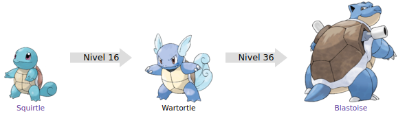

Wartortle
Wartortle es un Pokémon de tipo agua introducido en la primera generación. Es la evolución de Squirtle, uno de los Pokémon iniciales de Kanto.
evoluciones de wartortle

Su nombre proviene de las palabras en inglés war (guerra) y turtle (tortuga).
Su nombre japonés, Kameil, proviene de kame (tortuga) y probablemente de tail (cola).
Su nombre francés, Carabaffe, viene de carapace (caparazón) y Baffe (bofetada).
Wartortle es una tortuga semiacuática de una tonalidad azulada más oscura que Squirtle, su cola ha crecido bastante y ha cambiado de color hacia un azul muy claro finalizando en varias puntas enrolladas, de su cabeza ahora sobresalen dos grandes orejas con forma de alas y de la misma tonalidad de su cola, su caparazón tiene un tono café más opaco que su preevolución aunque sus placas periféricas y su plastrón siguen manteniendo los tonos blancos y crema respectivamente. Ahora sobresalen garras en los dedos de sus manos, unos colmillos de su boca, aunque sigue conservando el pico de tortuga, el iris de sus ojos pasa a ser café y su mirada se vuelve más fiera. Wartortle es reconocido como el símbolo de la longevidad, tiene una larga cola peluda, es un pelo grueso que se va oscureciendo conforme crece y simboliza lo longevo que es, es por ello que es muy popular entre la gente mayor. Se dice que puede llegar hasta a vivir 10 mil años, los Wartortle más ancianos tienen algas en su caparazón. Se oculta en el agua para cazar a sus presas, como nada muy rápidamente, necesita ayuda de sus enormes y peludas orejas, además de sus fuertes patas y larga cola para poder nivelarse y así mantener el equilibrio. Cuando golpean su cabeza se oculta dentro de su caparazón, aunque su cola queda expuesta, la puede usar para defenderse de sus agresores, los arañazos de su caparazón sirven de prueba de los combates que ha tenido y lo buen guerrero que es. Algunos bomberos forman equipos de Wartortle para apagar incendios, ya que tienen la potencia de Blastoise y un tamaño similar al de Squirtle. Al igual que Squirtle es conocido por lanzar chorros de agua a presión y vivir cerca de mantos acuíferos sin importar si son de agua dulce o salada.
Wartortle es una tortuga semiacuática de una tonalidad azulada más oscura que Squirtle, su cola ha crecido bastante y ha cambiado de color hacia un azul muy claro finalizando en varias puntas enrolladas, de su cabeza ahora sobresalen dos grandes orejas con forma de alas y de la misma tonalidad de su cola, su caparazón tiene un tono café más opaco que su preevolución aunque sus placas periféricas y su plastrón siguen manteniendo los tonos blancos y crema respectivamente. Ahora sobresalen garras en los dedos de sus manos, unos colmillos de su boca, aunque sigue conservando el pico de tortuga, el iris de sus ojos pasa a ser café y su mirada se vuelve más fiera. Wartortle es reconocido como el símbolo de la longevidad, tiene una larga cola peluda, es un pelo grueso que se va oscureciendo conforme crece y simboliza lo longevo que es, es por ello que es muy popular entre la gente mayor. Se dice que puede llegar hasta a vivir 10 mil años, los Wartortle más ancianos tienen algas en su caparazón. Se oculta en el agua para cazar a sus presas, como nada muy rápidamente, necesita ayuda de sus enormes y peludas orejas, además de sus fuertes patas y larga cola para poder nivelarse y así mantener el equilibrio. Cuando golpean su cabeza se oculta dentro de su caparazón, aunque su cola queda expuesta, la puede usar para defenderse de sus agresores, los arañazos de su caparazón sirven de prueba de los combates que ha tenido y lo buen guerrero que es. Algunos bomberos forman equipos de Wartortle para apagar incendios, ya que tienen la potencia de Blastoise y un tamaño similar al de Squirtle. Al igual que Squirtle es conocido por lanzar chorros de agua a presión y vivir cerca de mantos acuíferos sin importar si son de agua dulce o salada.
Información extraida de: Wartortle. (s. f.). WikiDex. Recuperado 5 de noviembre de 2022, de https://www.wikidex.net/wiki/Wartortle
Página creada por Luis Felipe Restrepo y Daniel Felipe Gutierrez